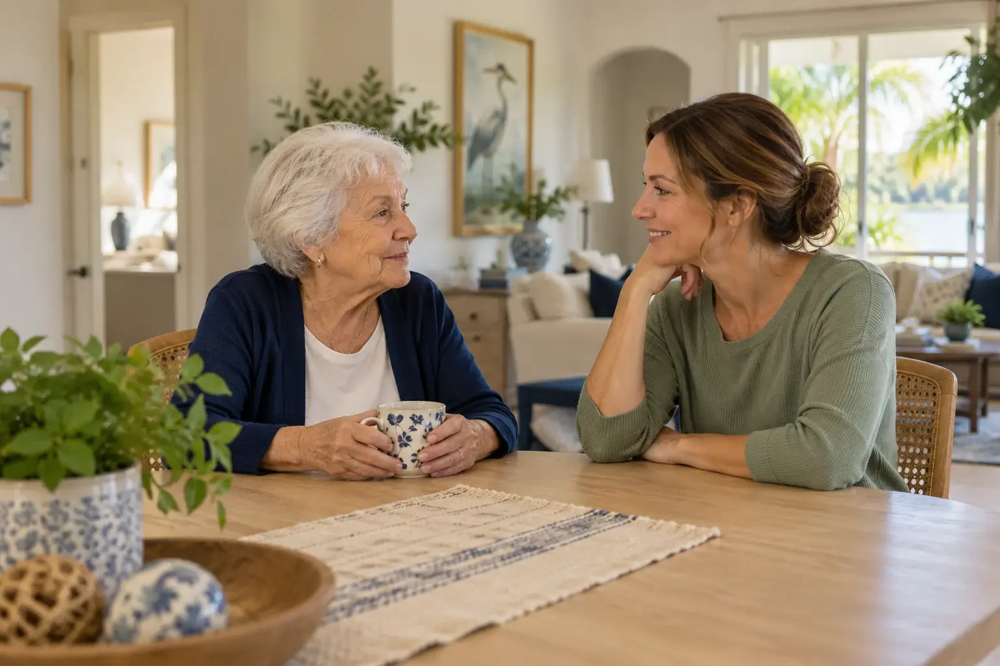

Companion care
A caring presence, a meaningful conversation and someone who takes the time to listen.
Discover companion care
Non-medical home care that helps older adults stay comfortable and independent at home, with day, overnight and 24-hour care available by arrangement.
Serving Lake Mary, Maitland, Sanford, Heathrow & Winter Park
Call (321) 977-3169
Start a personal conversation about the care you’re looking for.
Non-medical, in-home support for older adults in Lake Mary and Central Florida, from a few hours a week to round-the-clock care, by arrangement.
Home holds a lifetime of memories. When an older adult needs additional support, those familiar surroundings—and the freedom to feel like themselves—matter.
Guardians Home Health Care was founded by Ana Roberts to bring compassion, patience and meaningful human connection to everyday care. Every conversation begins with the person, the family and what matters to them.
A closer look at how we support older adults and their families at home.
Thoughtful everyday support centered on dignity, personal routines and staying connected at your convenience.
Explore senior careA caring presence, a meaningful conversation and someone who takes the time to listen.
Discover companion careDiscuss support that gives family caregivers room to rest and attend to their own lives.
Explore family supportTalk through the hours and shifts your family is considering, with availability confirmed personally.
Discuss care schedulesAna’s journey began in Brazil, where her passion for healthcare started at just 12 years old. That calling took her through years of education, hands-on experience and a special connection to caring for older adults.
Today, she brings that experience and a deeply personal commitment to dignity into Guardians Home Health Care—a company shaped by family, Christian values and the belief that every person deserves to feel seen and valued.
“To provide compassionate, dependable, dignified care while treating every client as an individual and every family with the respect they deserve.”
Ana’s mission is personal. It begins with listening, respects each person’s independence and recognizes the family behind every care decision.
Meet our founderStart with a conversation. There’s room to ask questions, share priorities and think through your options.
Reach out to Nurse Ana. Share your general care interests, your location and the schedule you have in mind.
Discuss your family’s priorities, possible support, suitability, availability and costs directly.
Any care arrangement begins only after the scope, schedule and applicable requirements have been reviewed.
Real photographs from our founder’s caregiving journey offer a glimpse into the experiences and relationships behind our work.
Client faces obscured in the supplied photographs remain obscured. Illustrative imagery is also used elsewhere on this website.
Our focus is on the communities around Lake Mary, extending through Winter Park. Contact us to confirm your location and discuss availability.
Explore our service areaEvery family’s circumstances are different. Here are a few useful things to know before we speak.
Ask us a questionGuardians is a newly established company preparing its licensing application. This website welcomes inquiries; a form submission does not book care. Any arrangement is subject to required authorizations, an individual review and confirmed availability.
Guardians focuses on non-medical home care: compassionate companionship, everyday support and reassurance for older adults and their families. Specific tasks, suitability, availability and any applicable authorization requirements are discussed before a care arrangement begins. This is not a medical treatment service.
Our service area focuses on Lake Mary (32746), Maitland, Sanford, Heathrow and Winter Park, Florida. Contact us to confirm whether your home is within the service area.
Yes. We provide daytime and overnight care for as many hours as your loved one needs, upon arrangement, and round-the-clock care can be arranged. Share the days, hours or shifts your family has in mind, and we will plan the schedule together.
You’ll speak directly with our founder, who has healthcare experience in Brazil and the United States and takes time to understand your family’s priorities and discuss the next steps personally.
The website describes non-medical home care. It does not offer diagnoses, laboratory testing, medication changes, skilled nursing or integrative medical treatment. Those needs should be discussed with your licensed medical provider.
Care is discussed on an hourly basis. Cost varies with the individual arrangement, number of hours and daytime or overnight schedule. Contact us for a conversation about your needs and a personalized discussion of costs.
Please share your name, phone number, email and general care interest. Do not submit medical records, diagnoses, medication information or other sensitive health details through this website. Specific care needs can be discussed directly through an appropriate channel.
Tell us what matters to your family. We’ll talk through your care interests, schedule and next steps.
Share your contact details, and we can discuss what support could look like for your family.